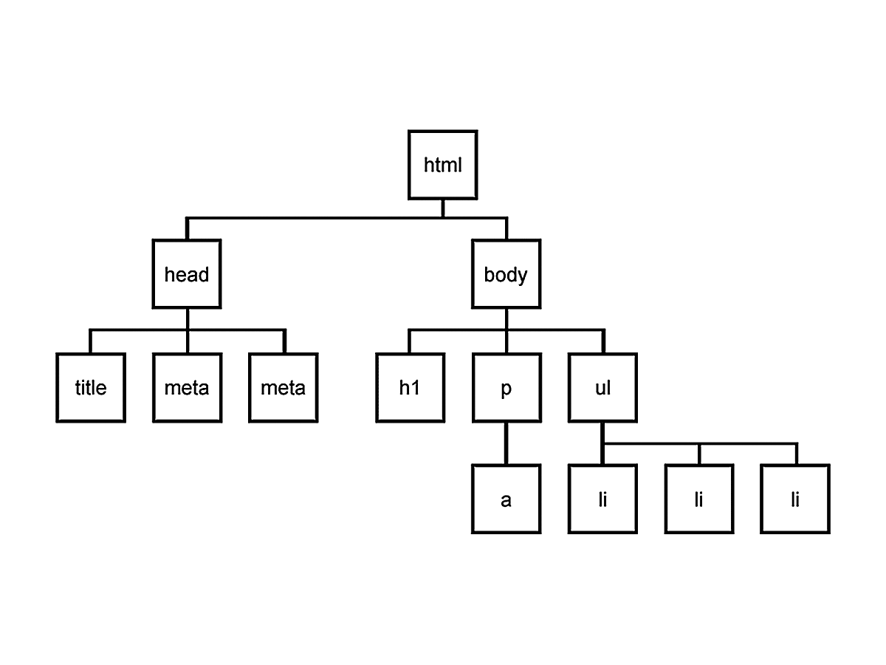

| The DOM | Events | Fetch |
In an earlier lesson, we learned about Javascript objects. Recall that objects can have both attributes (properties) and behaviors (methods). When writing javascript for the browser, we have access to arguably the most important object in Javascript: the Document Object Model (DOM).
The DOM is the data representation of a webpage's html structure and content.
For the rest of this lesson, all code should be entered into the javascript console in your browser's developer tools.
(Alternatively, if coding in a separate file, wrap any code in console.log() to view it in the javascript console.)
document
// => #document
Expand the object in your console (by clicking the tiny arrow to its left). Does it look familiar? Switch over to the "Elements" tab in your Developer Tools. It should look familiar now. The browser adds extra behaviors to the document object displayed in the "Elements" tool, but otherwise, they're almost identical!
So what now? Well, the DOM is a lot more than just a representation of the page's html neatly organized. Let's check out one of its attributes:
document.location
// => Location {...}
The location attribute is an object (denoted by the curly braces `{...}`). And as with any object, it has its own attributes:
let location = document.location
location.href
// => "https://..."
Notice that the href attribute of the DOM's Location object is a String - the current webpage's URL (or address).
Let's look at another of the DOM's attributes, children:
document.children
// => HTMLCollection [html]
What does this attribute look like? The `[]` is a hint. It's called an HTMLCollection, but for all intents and purposes, it's an array! This particular array only has 1 element inside:
document.children[0]
// => <html lang="en">...
If we compare this with our html in the "Elements" tool, we'll see this is the top-level <html> element of our webpage. Let's dig 1 level deeper:
let htmlElement = document.children[0]
htmlElement.children
// => HTMLCollection(2) [head, body]
Now we're looking at another array, this time with 2 elements. The first is our <head> element. The second is our<body> element.
Collectively, the DOM is a tree of these html elements, or nodes, where each node is an object representing an html element. And as an object, each node has its own attributes and behaviors.
A simple visualization of the DOM tree: 
Using a node's children attribute, we can traverse the tree downward. If a node has no child nodes, the children attribute will be an empty array (`[]`). Every node in the DOM has a single parent node (except for html). We can access the parent using the node's parentElement attribute, and then traverse the tree back upward.
let headNode = document.children[0].children[0]
let bodyNode = document.children[0].children[1]
headNode.parentElement
// => <html lang="en">...
bodyNode.parentElement
// => <html lang="en">...
bodyNode.parentElement.parentElement
// => null
There are many more node attributes to explore and we'll look at a couple more shortly, but let's turn to behaviors (methods) first.
You can probably imagine that in a long and complex webpage of html nodes, it would be cumbersome to find a node by going through the entire tree. It's also what software developers would call fragile because even a minor change in the html structure might break the code. Thankfully, there are more precise and resilient ways to locate DOM nodes using built-in methods.
We'll use the following sample html for this section.
<!DOCTYPE html>
<html lang="en">
<head>
<title>KIEI-451</title>
</head>
<body>
<div class="main">
<h1>Lessons</h1>
<ul id="lessons">
<li class="lesson">The DOM</li>
<li class="lesson">Events</li>
<li class="lesson">APIs</li>
</ul>
<p>This week, we're learning to use Javascript in the browser.</p>
</div>
<div class="footer">
<p>Thanks for taking KIEI-451!</p>
<ul>
<li>Contact</li>
<li>Next Week</li>
</ul>
</div>
</body>
</html>
This week, we're learning to use Javascript in the browser.
Thanks for taking KIEI-451!
If we wanted to get to the list of lessons <ul> node using children, it would look like this:
document.children[0].children[1].children[0].children[1]
// => <ul id="lessons">...
🤢 Yuck. Not only is that inefficient and fragile code, but also just ugly and hard to follow. Instead, let's use a built-in DOM object method querySelector(). Every DOM node has this method which will attempt to find a nested child node. It expects a parameter to identify the element we're looking for. And since javascript is meant to be used in the browser, it borrows an idea from another browser language - CSS selectors.
| Selector | Example | Description |
|---|---|---|
| element | p | Selects all <p> elements |
| class | .footer | Selects all elements with class="footer" |
| id | #lessons | Selects the element with id="lessons" |
You can learn more about css selectors here.
The list of lessons is a <ul> element with an id of lessons. Let's try it!
document.querySelector('#lessons')
// => <ul id="lessons">...
It should be immediately apparent that this is better. It's more descriptive, less code, and less vulnerable to changes in the html structure.
Any basic css selector will work as the parameter. However, it's important to know that this method only returns the first node it finds in the tree. Let's see an example:
let footer = document.querySelector('.footer')
footer.querySelector('li')
// => <li>Contact</li>
Every node in the DOM has the querySelector() method. So in this code, we first get the footer node and then search within it.
There are 2 <li> elements inside the footer. But the method only returns 1, the first. In order to return the second, we would need a more specific selector. When using the querySelector() method, the parameter should always be a unique selector (like #lessons and .footer).
However, sometimes we need to find all the elements matching a non-unique selector. For example, maybe we actually want both <li> elements inside the footer. In that case, we'll use a different built-in method, querySelectorAll(). Similarly to querySelector(), it expects a css selector as a parameter:
document.querySelectorAll('li')
// => NodeList(2) [li, li]
Instead of returning a single node, the querySelectorAll() method returns an array of nodes, called a NodeList.
Now we know how to find 1 or multiple nodes with javascript. That functionality is interesting, but not immediately useful. So let's put it to use.
In addition to searching the DOM, javascript is really good at manipulating the DOM. Meaning, it can change the html structure and content even after it's been loaded and displayed to the user.
We'll start by using a new attribute of a node, innerHTML, which is exactly what it sounds like - all of a node's nested html content.
let mainNode = document.querySelector('body')
mainNode.innerHTML
// => "
// <div class="main">...</div>
// <div class="footer">...</div>
// "
Notice that the value of the innerHTML attribute is different than a node. For starters, it only includes the node's nested html (not the node itself). It also can't be expanded like a node object. It's just the raw html as a String (denoted by the wrapping quotes `"..."`). It has the same attributes and behaviors as any other String object (and none of a DOM node).
As with any object's attributes, we can simply re-assign the value of innerHTML, which will modify it in the DOM.
let mainNode = document.querySelector('body')
mainNode.innerHTML = "<div>This div replaced all of the html in the body.</div>"
// => "<div>This div replaced all of the html in the body.</div>"
<!DOCTYPE html>
<html lang="en">
<head>
<title>KIEI-451</title>
</head>
<body>
<div>This div replaced all of the html in the body.</div>
</body>
</html>
All of the html within the <body> should have been replaced with the new html. The change is not permanent - it will be reverted when the page is reloaded. New request, new response.
If we want to add another line that says "You can reload the page to see the original html.", we just need to re-assign the innerHTML attribute. We could reconstruct all of the html, or get the existing html and then add to it:
let mainNode = document.querySelector('body')
let html = mainNode.innerHTML
let newLine = "<div>You can <em>reload</em> the page to see the original html.</div>"
mainNode.innerHTML = html + newLine
// => "
// <div>This div replaced all of the html in the body.</div>
// <div>You can <em>reload</em> the page to see the original html.</div>
// "
<!DOCTYPE html>
<html lang="en">
<head>
<title>KIEI-451</title>
</head>
<body>
<div>This div replaced all of the html in the body.</div>
<div>You can <em>reload</em> the page to see the original html.</div>
</body>
</html>
We could repeat this process as we continue to modify the html, but javascript has a built-in method to make it easier, insertAdjacentHTML(). This method takes 2 parameters – first, the name of a position indicating where we'd like to insert our HTML (e.g. beforeend which will be inside the node, after its last child); and, second, a string of HTML content.
Let's give credit where credit is due...
let mainNode = document.querySelector('body')
let yourName = "Grogu" // replace with your name!
mainNode.insertAdjacentHTML('beforeend', `
<div><strong>-- Written by ${yourName} with Javascript!</strong></div>
`)
// => undefined
<!DOCTYPE html>
<html lang="en">
<head>
<title>KIEI-451</title>
</head>
<body>
<div>This div replaced all of the html in the body.</div>
<div>You can <em>reload</em> the page to see the original html.</div>
<div><strong>-- Written by Grogu with Javascript!</strong></div>
</body>
</html>
That's it for the DOM. Next up, browser events.